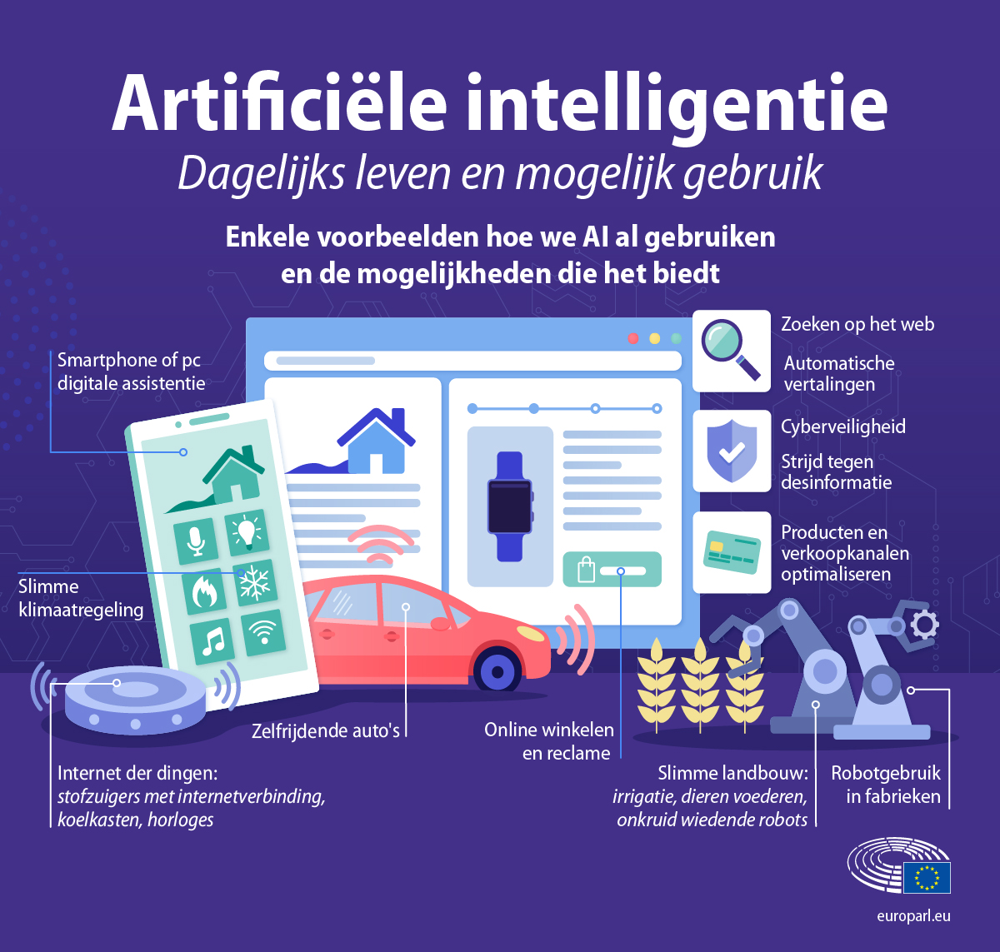

KI kan voor bijna alles gebruikt worden. Het wordt door veel mensen en bedrijven toegepast omdat het heel veel tijd bespaart.
Hieronder staan een aantal gebieden waar KI in gebruikt wordt:
- Gezondheidszorg: KI wordt in de gezondheidszorg gebruikt voor onder andere medische beeldvorming, diagnoseondersteuning en medicijnontwikkeling:
Ook zijn er soorten KI die bijvoorbeeld een tumor kunnen detecteren op radiologische beelden en ziekterisico’s kunnen voorspellen op basis van genetische gegevens.
- Autonome voertuigen: Bijvoorbeeld zelfrijdende auto’s die gebruik maken van KI-algoritmen om de omgeving te begrijpen, obstakels te detecteren en veilig te navigeren.
- Financiële dienstverlening: In de financiële sector wordt KI gebruikt voor onder andere het voorkomen van fraude en het voorspellen van markttrends.
Algoritmen analyseren grote hoeveelheden financiële gegevens om mensen te helpen betere keuzes te maken.
- E-commerce: Grote online bedrijven zoals Amazon maken gebruik van KI voor aanbevelingssystemen.
Deze systemen analyseren het gedrag van klanten en laten op basis van het gedrag producten zien die interessant zijn voor iemand.
- Klantenservice: Chatbots en virtuele assistenten kunnen vragen beantwoorden, problemen oplossen en eenvoudige transacties uitvoeren.
- Onderwijs: KI kan worden ingezet om leermaterialen te maken die aangepast zijn aan het niveau van de leerling.
- Productie: Fabrieken maken gebruik van KI om processen te optimaliseren waardoor de efficiëntie en de kwaliteit verbeteren.
- Taalverwerking: Kunstmatige intelligentie wordt gebruikt in vertaaldiensten en spraakherkenning.
Dit maakt communicatie tussen mensen uit verschillende landen gemakkelijker.
- Wetenschappelijk onderzoek: In wetenschappelijke onderzoeken wordt KI gebruikt voor onder andere datamining en simulaties.